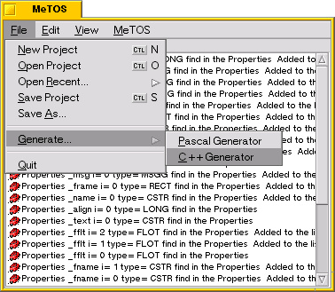

Create and Write C++...
To Generate code into MeTOS you must use the generators.
Generators can be access by the menu of MeTOS.

At this time ONLY C++ generator can be used.
C++ Generator display after click on Start button the result of c++ and files generated.

When an object has the Derived properties, in this window a cpp and header files are generate.
To write these files just click on Write (after clicking on Start).
Files are write into the path of the Project object.
In this version a makefile is genareted with the files, but you can disabled this into the settings of MeTOS.
top
- CKJ - Vincent Cedric
Copyright (c) 2000-2004.